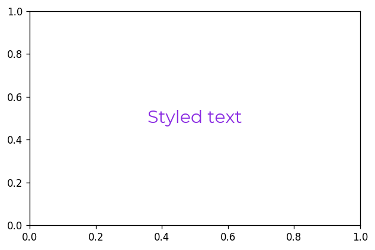
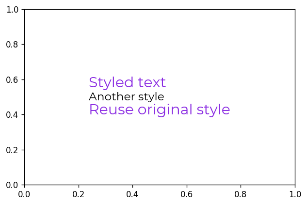
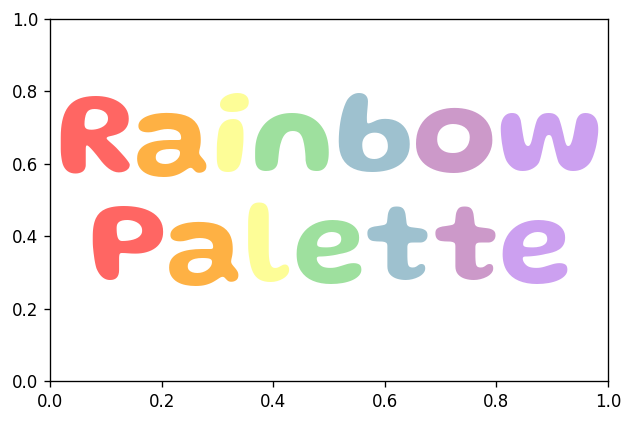

Object-Oriented Interface¶
Flexitext provides the FlexiText() class. This class is wrapped by the flexitext() function to provide the functional implementation. Unlike the functional implementation, this class based implementation does not work with formatted strings. It works with instances of the class flexitext.Text. These are lower level objects that contain both the text and the styles, given by an instance of flexitext.Style.
Setup¶
import matplotlib as mpl
import matplotlib.pyplot as plt
from flexitext import FlexiText, Style
mpl.rcParams["figure.figsize"] = (6, 4)
mpl.rcParams["figure.dpi"] = 120
Style class¶
The Style class stores styles that are applied to some text. Its arguments are the names of the styles supported (see here).
style = Style(color="blueviolet", size=18, name="Montserrat")
print(style)
Style(color=blueviolet, name=Montserrat, size=18)
This style object can be called with a string we would like to format and it returns an instance of flexitext.Text.
text = style("Styled text")
print(text)
Styled text
print(text.style)
Style(color=blueviolet, name=Montserrat, size=18)
FlexiText class¶
FlexiText objects are created with a variable number of Text objects. Then we call the .plot() method, which accepts the same arguments than flexitext(), and draw the all the texts with their corresponding styles.
fig, ax = plt.subplots()
FlexiText(text).plot(0.5, 0.5, ha="center");

This interface allows us to re-use styles.
style2 = Style(size=14, name="Montserrat")
fig, ax = plt.subplots()
ft = FlexiText(
style("Styled text\n"),
style2("Another style\n"),
style("Reuse original style")
)
ft.plot(0.5, 0.5, ha="center");

More examples¶
The object-oriented interface is useful when you want to create styles in a programatically way without dealing with strings and when you want to re-use those styles. Let's see an example:
RAINBOW_COLORS = ["#FF6663", "#FEB144", "#FDFD97", "#9EE09E", "#9EC1CF", "#CC99C9", "#CCA0F0"]
# Create list of styles
styles = [Style(size=72, color=color, name="Gluten", weight=600) for color in RAINBOW_COLORS]
# Create lists of texts
texts1 = [s(letter) for s, letter in zip(styles, "Rainbow")]
texts2 = [s(letter) for s, letter in zip(styles, "Palette")]
# Create plot
fig, ax = plt.subplots()
FlexiText(*texts1).plot(0.5, 0.65, ha="center");
FlexiText(*texts2).plot(0.5, 0.35, ha="center");
